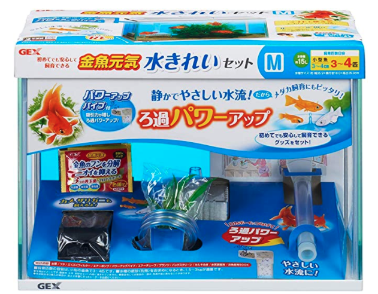
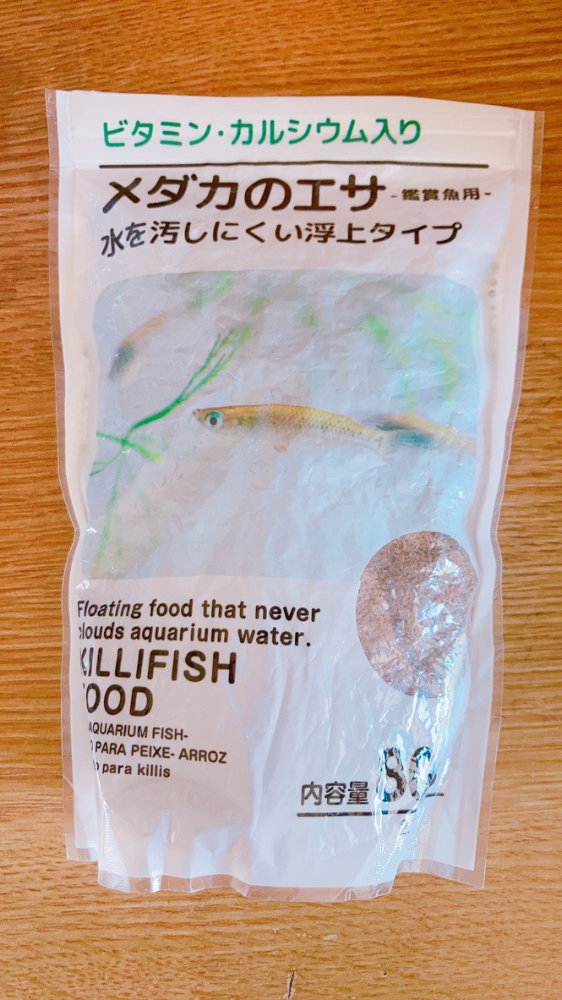
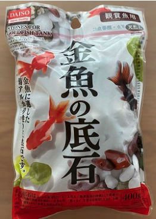

めだかの飼育準備
なんの前触れもなく、母親が道の駅で楊貴妃８匹を買ってきました。
家に用具が何もなかったので、以下のものを揃えて飼育を始めました。
水槽の準備
以下に似た商品をホームセンターで買いました。
（私のやつとブクブクの形がちょっと違います）
■ジェックス 金魚元気 水きれいセットM
 出典：http://www.amazon.co.jpネットで探せばもっと色々あると思いますが、
- その日にすぐ欲しかった
- 近くのホームセンターにこの種類しかなかった
でもこのセットで、
- 水槽
- ポンプ
- カルキ抜き
- フェイク水草
- お魚飼育BOOK
餌の準備
正直、１００均のもので十分です。
わたしが買ったのは以下です
元気に泳いでいるので全く問題ありません。
ちなみに、稚魚用も売ってます。（繁殖し始めたとき買いました。）
石の準備
一応私が買ったのは以下の１００均の石です。
正直あまりおすすめしません。
理由は、最初石に粉？がついているのでそれを洗い落とすのですが、
この粉が、まーなかなか取り終わらないです。
１０回以上洗ったかと思います。
この粉を残したまま水槽に入れると、水が白く濁ります。
石は、ホームセンターやネットで買ったほうがいいかもしれないです。
完成品
こんな感じです。
買ってきたときの入れ物をそのまま水槽に突っ込んでたので、値札を消しています。
（このときの石やら飾りやらは家にあったものを使ってるので、
上記で紹介したものではありません。）

以上、これだけ買っておけば、めだか飼育できるよ、の紹介でした！